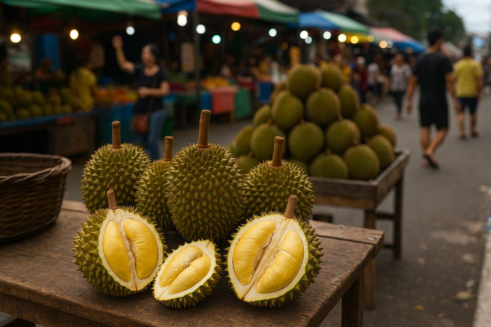
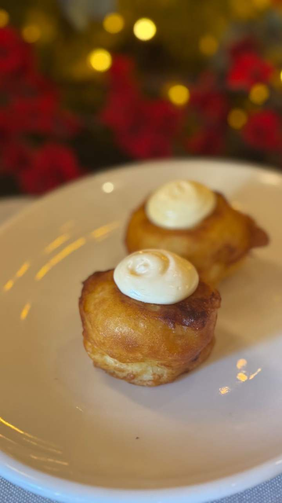
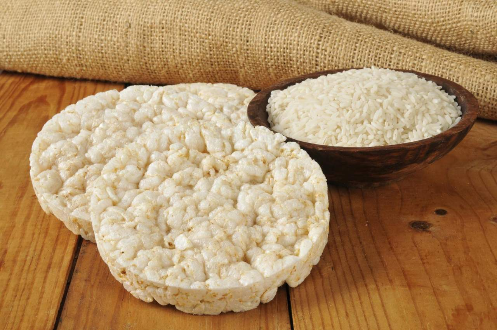

Local Food & Delicacies
From tropical fruits to indigenous delicacies — a culinary journey through the province

Durian
The "King of Fruits," durian is a Davao specialty known for its rich, creamy flesh and distinctive aroma. Enjoyed fresh, as candy, pastries, ice cream, or as durian coffee — a local innovation unique to the region.

Grilled Tuna Belly
Davao del Norte is famous for its fresh yellowfin tuna from the Davao Gulf. Grilled tuna belly marinated in local spices is a must-try at most seafood restaurants — tender, smoky, and unmistakably Davaoeño.

Bula: Davao’s Unique Dessert Delight
Bula is a well-loved Davao delicacy made from sweetened milk foam, crushed ice, and flavorful ingredients that create a creamy and refreshing dessert experience. Its light texture and sweet taste make it a favorite treat during hot afternoons and local festivities.

Lujon: Tasty Rice Cakes
Lujon is a popular native rice cake delicacy in Davao del Norte, known for its soft texture and mildly sweet flavor. Made from rice flour, coconut milk, and sugar, this traditional snack is commonly enjoyed during gatherings, fiestas, and local celebrations.